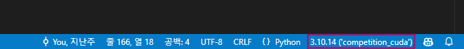
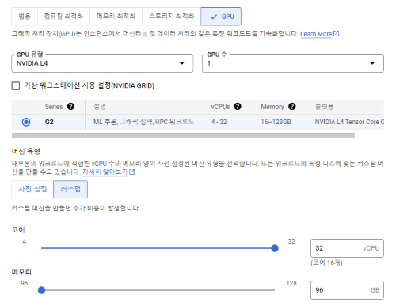
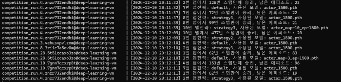
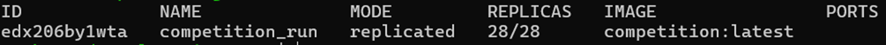
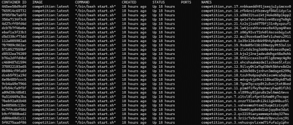

참고
보고서 PPT 제출 기한:- 학기 끝나기 전까지
대회 우승 조건:- 에피소드 100번 환경에서 승리 횟수가 가장 많고, 승리 횟수가 같은경우에는 평균 Step수가 가장 적게 나와야 한다
에이전트:초록색(agent1)이 우리의 모델이고, 이게 승리를 해야 승리 횟수가 올라간다. 즉, 이 에이전트의 승리횟수를 높여야 한다보라색(agent0)은 상대이며 그냥 랜덤하게 이동하는 에이전트 이다.
에피소드:- 한 맵에서 두 에이전트 중에서 누군가 하나 도착하거나, step수를 500번을 초과하면 다른 맵으로 전환되는데 이렇게 되면 한 에피소드가 끝이 난다
개발 환경 생성
-
vs code 에서 프로젝트 폴더를 열고
Python Extension Pack확장을 설치 -
콘솔에 해당 명령어 입력
conda env create -f environment_NonCuda.yml -
vs code 우측 하단에 해당 부분을 눌러 나오는 화면에서
competition_noncuda를 선택
-
vs code 에서 F5키를 눌러 디버깅 시작
코드 수정 하는 법
- 이 부분을 참고하셔서 진행 해 보시고 ppt 작성하시면 됩니다.
실행 인자 수정 하는 법 (맵, 전략 선택 법)
-
.vscode/launch.json파일 열기"version": "0.2.0", "configurations": [ { "name": "Python 디버거: 현재 파일", "type": "debugpy", "request": "launch", "program": "evaluation_local.py", //주목 "args": [ "--my_ai", "rl", "--opponent", "random", "--episode", "100", "--map", "all", "--gui", "true", "--repeat", "0", "--diff-strategy" ], "console": "integratedTerminal" } ] } -
args안에 있는 값을 수정하면 되는데 왼쪽에 있는게 key 값, 오른쪽에 있는게 value 입니다. -
--map같은 경우,all로 설정이 되어있는데, 맵을 고정하고 싶다면, “1”, “2”, “3” 이렇게 수정하시면 됩니다 -
전략을 고정하고 싶다면
--diff-strategy값을 삭제하고--strategy,<전략명>이렇게 수정하시면 됩니다 -
전략명은
constants.pySTRATEGY 변수에 키값들 입니다. (default, strategy1, strategy2, strategy3)
(참고) 일반 콘솔에서 사용 시
-
먼저 가상환경을 활성화 합니다
conda activate competition_noncuda -
python 으로 실행합니다
python evaluation_local.py --my_ai rl --opponent random --episode 100 --map all --gui true --repeat 0 --diff-strategyevaluation_local.py뒤에 붙는게 전부 실행 인자 입니다
전략 수정
-
constants.py에 STRATEGY 변수값을 수정하면 되는데"strategy4": { # index: [힘, 각도] 0: [-100, -30], 1: [-100, -18], 2: [-100, -6], 3: [-100, 6], 4: [-100, 18], 5: [-100, 30], 6: [-40, -30], 7: [-40, -18], 8: [-40, -6], 9: [-40, 6], 10: [-40, 18], 11: [-40, 30], 12: [20, -30], 13: [20, -18], 14: [20, -6], 15: [20, 6], 16: [20, 18], 17: [20, 30], 18: [80, -30], 19: [80, -18], 20: [80, -6], 21: [80, 6], 22: [80, 18], 23: [80, 30], 24: [140, -30], 25: [140, -18], 26: [140, -6], 27: [140, 6], 28: [140, 18], 29: [140, 30], 30: [200, -30], 31: [200, -18], 32: [200, -6], 33: [200, 6], 34: [200, 18], 35: [200, 30], },- 이 한덩어리가 전략 입니다.
0~35이 index는 모델이 선택하는 값으로 모델이 환경데이터에 따라 자동으로 선택합니다.[-100, -30]이 값에서- 0번 index는
힘이며 -100 ~ 200에 값을 가집니다. -100이면 최대 힘으로뒤로가고 200이면 최대 힘으로 앞으로 갑니다. - 1번 index는
각도이며 -30~30 값을 가집니다.
- 0번 index는
- 이거를 현재 전략들 뒤에 추가하고 해당 전략으로 실행한다고 친다면
실행 인자를
--strategy,strategy4이렇게 수정하면 됩니다. - 원래 대회에서 요구한게 이 값을 적절히 수정하여 승리 횟수를 가장 많이 확보하게 하는것이 목적입니다.
현재 전략에 대한 설명
default:- 원래 기존에 있던 코드에 전략 입니다
strategy1:- 힘에 대한 부분을 단순화 하여 -50 뒤로 가거나 최대로 가는거 두개만 허용하였고, 각도도 +- 30, 15, 7로 수정을 했습니다 이 전략에 경우 각이진 맵에서 효과적입니다
strategy2:- 2번 전략은 무조건 최대로만 갈 수 있게 하고 각도에 대한것을 세분화 하 였습니다 이 전략에 경우 단순히 1직선으로 되어있는 맵에서 효율이 좋았습니다
strategy3:- 힘은 150 정도로 제한해놓고 각도는
strategy1전략과 똑같이 하는 방향으로 시도 해보았습니다 이 전략은 곡선 형태에 맵에서 효율이 좋았습니다
- 힘은 150 정도로 제한해놓고 각도는
—diff-strategy 실행 인자에 대해
- 현재 전략들이 좋은 효율이 내는 맵들이 각각 달라서 맵에따라 전략을 다르게 가져가기로 했습니다.
constants.py에 MAP_STRATEGY 라는 변수가 있는데 이게 맵에 따라 사용하는 전략을 정의해 놓은 변수입니다- 따라서
--diff-strategy실행 인자를 설정하면 해당 변수값에 따라 전략이 달라지게 됩니다. - 그래서 전략을 고정하여 테스트 할때는
--diff-strategy인자를 삭제하고--strategy인자를 추가 하라고 한겁니다.
제가 시도한 여러 방법들
이 부분에 내용이 이해 되신다면 ppt에 작성하셔도 좋습니다. 이해가 안되신다면 위에
전략수정부분 위주로 서술해 주세요.
실행환경에 대해
GCP 에서 서버 할당 받기

- 대회 특성상 많이, 그리고 오래 할수록 유리합니다, 그래서 로컬PC로 굴리는건 조금 한계가 있으므로 GCP (Google Cloud Platform) 에서 서버를 할당받아 사용하였습니다.
- Nvidia L4 GPU, 32코어 CPU, 96GB 메모리 사양을 가진 서버를 할당받았습니다
Docker 사용
- 서버에서 그냥 실행해도 되지만, 실행 관리와 로그 관리를 위해 할당받은 서버에 Docker를 설치하여 사용하였습니다.
- 서버를 실행하는 코드를
Dockerfile로 만들어서 이미지 생성 후 Docker-compose 파일을 작성해서 Docker Swarm을 통해 Service 형태로 배포하였습니다. Dockerfile과Docker-compose파일은 프로젝트 폴더에서 찾을 수 있습니다.
설명



- 이 사진에서 컨테이너가 28개로 생성이 되어있는데 각 항목이 이제 컨테어너인데 컨테이너 하나당 대회 실행코드 하나씩 실행하고 있는 겁니다,
- 무슨소리냐면 대회 프로그램을 28개 실행해서 계속해서 돌려본거죠 28게중에 하나만 제대로 하나만 나와라 이런 느낌으로
- 그래서 최종 테스트에서는 이걸 28개를 실행한 거죠
코드수정에 대해
- 요약하면 각 맵 마다 전략과, 모델을 전부 다르게 수정하였습니다.
1. 프로그램을 무한정 시도할 수 있도록 수정
- 기존 코드에서는 에피소드 100번을 끝마치면 프로그램이 종료되는데 이걸 무한정 할 수 있도록 반복문을 추가 하였습니다
- 실행 인자를 수정하면 기존처럼 에피소드 100번 끝나면 바로 종료되도록 하는것도 가능합니다.
코드 수정
-
프로그램을 무한정 시도 할 수 있도록 수정 (evaluation_local.py, 213 라인)
while True: # 0으로 설정되있으면 무한 반복 if repeat != 0 and ((repeat + 1) <= i): break Log(f"{i}번째 시도") print() conut, avg = run_game( game, algo_list=agent_list, episode=args.episode, shuffle_map=shuffle, map_num=args.map, diff_strategy=args.diff_strategy, strategy=args.strategy, render_gui=render_gui, verbose=False, ) ... 이하 생략...
2. 일부 코드에 대한 CUDA(GPU) 지원 추가
- 기존 코드가 cpu만 사용하여 cpu에 점유율이 높은 관계로 gpu 연산을 일부 도입 하여 cpu 점유율을 낮춰서
- 더 많은 대회 프로그램을 실행할 수 있게 위함 입니다
코드 수정
-
CUDA를 사용할지 말지 결정하기 위한 상수 (constants.py, 1라인)
DEVICE = "cuda" -
CUDA를 사용할 수 있는지 확인하는 부분 (evaluation_local.py, 152라인)
is_available_cuda = False if torch.cuda.is_available(): is_available_cuda = True print("CUDA 사용 가능") else: print("CUDA 사용 불가능") -
CUDA를 사용할 수 있으면 CUDA 를 사용하기 (agents/submission.py, 48라인)
self.device = ( "cuda" if torch.cuda.is_available() and DEVICE == "cuda" else "cpu" )
3. 모든 전략에 대해 성능 평가
- 기존에
default전략과 추가한strategy1~3전략들 중 각각 어떤걸 쓰는게 더 좋을지에 대해 테스트 해봤습니다. - 서버PC 에서 대략 하루동안 테스트 했습니다
성능 평가 결과
자세한 로그와 결과는
기록/모든 전략 테스트폴더에서도 확인 가능 합니다.
default: 최고기록: 22번째 시도, 승리 횟수: 66, 평균step: 189.9090909090909
strategy-1: 최고기록: 45번째 시도, 승리 횟수: 69, 평균step: 194.47826086956522
strategy-2: 최고기록: 38번째 시도, 승리 횟수: 41, 평균step: 138.82926829268294
strategy-3: 최고기록: 36번째 시도, 승리 횟수: 63, 평균step: 127.0
- 결과적으로
strategy-1 > default > strategy-3 > strategy-2이렇게 결과가 나왔습니다.
4. 각각에 맵에 대해 다른 전략을 사용하여 테스트
- 위에 모든 전략 테스트를 해본 뒤 생각보다 기본 전략보다 성능이 특별히 좋지가 않아서
- 맵별로 가장 빠르게 도착하는 전략을 찾아서 맵별로 다르게 전략을 사용하면 좋지 않을까 라는 생각을 합니다.
- 이 부분도 위에
모든 전략에 대해 성능 평가하면서 같이 서버PC 에서 대략 하루 동안 테스트 해봤습니다.
코드 수정
-
맵별로 사용하는 전략을 정의하는 상수 (constants.py, 159라인)
MAP_STRATEGY = { 1: "strategy2", 2: "strategy3", 3: "default", 4: "default", 5: "strategy3", 6: "strategy3", 7: "default", 8: "strategy3", 9: "strategy2", 10: "strategy3", 11: "strategy1", } """맵별 전략"""<맵 index>:<해당맵에 사용하는 전략>이렇게 되어있습니다
-
해당 상수값을 참조하여 나오는 맵에 따라서 전략을 선택하는 코드 (evaluation_local.py, 82라인)
if strategy: map_strategy = STRATEGY[strategy] elif diff_strategy: Log(f"{map_index}번 맵전략: {MAP_STRATEGY[map_index]}, 사용된 모델: {model_name}") # type: ignore map_strategy = STRATEGY[MAP_STRATEGY[map_index]] # type: ignore else: raise Exception( "--diff-strategy값 또는 --strategy값을 실행 인자로 넣어주세요" )
성능 평가 결과
자세한 로그와 결과는
기록/모든 전략 테스트폴더에서도 확인 가능 합니다.
diff: 최고기록: 3번째 시도, 승리 횟수: 71, 평균step: 115.64788732394366
default: 최고기록: 22번째 시도, 승리 횟수: 66, 평균step: 189.9090909090909
strategy-1: 최고기록: 45번째 시도, 승리 횟수: 69, 평균step: 194.47826086956522
strategy-2: 최고기록: 38번째 시도, 승리 횟수: 41, 평균step: 138.82926829268294
strategy-3: 최고기록: 36번째 시도, 승리 횟수: 63, 평균step: 127.0
- 결과적으로 이렇게 맵별로 다른 전력을 가져가는것이 좋은걸로 나타나 이렇게 사용하기로 결정 하였습니다
5. 3일동안 서버에서 벤치마크 진행
- 위에 결론을 토대로 맵별로 전략을 다르게 하여 컨테이너 8개로 3일동안 테스트를 진행 했습니다
결과
자세한 로그와 결과는
기록/맵 별 전략, 컨테이너 8게 테스트폴더에서도 확인 가능 합니다.
+-----------+--------------------+------+
| Name | random | rl |
+-----------+--------------------+------+
| score | 1.0 | 79.0 |
| win | 1.0 | 79.0 |
| avg_steps | 141.36708860759492 | - |
+-----------+--------------------+------+
현재 최고기록: 118번째 시도, 승리 횟수: 79, 평균step: 141.36708860759492
- 7번째 컨테이너에서 승리횟수 79회, 평균step: 141을 최고기록으로 달성하였습니다.
6. 추가적인 모델 학습 진행
- 기존에 제공된 기본 모델은
agents/rl/actor_1500.pth파일인데 - 조금 더 승리 횟수를 높이고자 모델을 직접 학습하여 사용해보기로 합니다.
- 학습 코드는
rl_trainer/main.py파일을 조금 수정하였고 - 모든 맵에대해 각각 1500번 에피소드로 학습을 진행하였습니다
코드 수정
학습된 모델파일 전체는
agents/rl/model_backup.zip파일에 있습니다.
-
모든 맵을 순회 할 수 있도록 최상위 반복문 추가 (rl_trainer/main.py, 161라인)
while True:- 원래는 특정 맵만 학습 가능 하게만 되어있어서, 모든 맵을 전체 학습 할 수 있도록 최상위 반복문을 추가했습니다
-
각 맵을 1500번 순회할 때 마다, 모델을 저장하는 코드 (rl_trainer/main.py, 187라인)
if args.map != "all" or rotate_map >= 11: break if args.train: # 각 맵을 학습할때 순회를 완료하면 # (temp) actor_map-<맵 index>_ep-1500 이런식으로 저장 model.save(run_dir, episode, map=str(rotate_map), temp_save=True) rotate_map += 1 if args.train: # 전체맵을 전부 순회하여 학습하면 # actor_1500_allmap.pth 이런식으로 저장 model.save(run_dir, episode, map=args.map, temp_save=False)- 원래는 특정 맵만 학습 가능 하게만 되어있어서, 모든 맵을 전체 학습 할 수 있도록 최상위 반복문을 추가했습니다
- 로직 상 1번 맵을 학습할때는 모델이 1번맵에 대한 정보만 저장하고, 2번 맵을 학습할 때는 1번맵과, 2번맵 정보를 담아서 저장하게 됩니다. 그니까 맵을 하나 돌때 마다 맵에 대한 학습정보를 누적시키는 거죠
(참고) 학습코드 실행 방법
python rl_trainer/main.py --map all --gui false --train --max_episodes 1500결과
- 11번 맵까지 전부 학습하여 해당 모델로 모든맵에 대해서 테스트를 진행 해봤는데
- 모델 사이즈 자체가 작아서 그런지 가장 최근에 학습한 맵에 대해서는 나름 좋았으나, 그 이전에 맵들에서는 성능이 기본모델 보다 성능이 더 떨어졌습니다
7. 각각에 맵에 대해 다른 모델을 사용하여 테스트
- 그래서 결국은 각각에 맵 까지만 학습된 모델을 각각에 맵에 맞춰서 사용하기로 했습니다
- 다만 커스텀 훈련된 모델을 사용할 경우 큰 효과를 보는 3, 5, 10번, 맵에 대해서만 모델을 바꿨습니다.
- 즉 나머지 맵은 기본모델(agents/rl/actor_1500.pth)을 사용합니다.
코드 수정
-
맵별로 사용하는 모델을 정의하는 상수 (constants.py, 175라인)
MAP_MODEL = { 1: "actor_1500.pth", 2: "actor_1500.pth", 3: "actor_map-3_ep-1500.pth", 4: "actor_1500.pth", 5: "actor_map-5_ep-1500.pth", 6: "actor_1500.pth", 7: "actor_1500.pth", 8: "actor_1500.pth", 9: "actor_1500.pth", 10: "actor_map-10_ep-1500.pth", 11: "actor_1500.pth", } """맵별 모델 (기본값: actor_1500.pth)"""<맵 index>:<해당맵에 사용하는 모델파일명>이렇게 되어있습니다- 모델파일은
agents/rl폴더에 있습니다.
-
해당 상수값을 참조하여 나오는 맵에 따라서 모델을 불러오는 코드 (evaluation_local.py, 79라인)
# 모델 로드 # 맵별로 다른 모델을 사용하므로 constants.py 파일 참고 model_name = MAP_MODEL[map_index] # type: ignore agent = loadModel(model_name)
8. 최종 벤치마크
-
이렇게 완성된 코드를 가지고 28개 컨테이너로 벤치마크를 진행 한게 이번 경진대회에서 발표할 결과 입니다.
[2024-12-09 22:08:53] total reward: [ 1. 86.] [2024-12-09 22:08:53] Result in map all within 100 episode: +-----------+--------------------+------+ | Name | random | rl | +-----------+--------------------+------+ | score | 1.0 | 86.0 | | win | 1.0 | 86.0 | | avg_steps | 144.62790697674419 | - | +-----------+--------------------+------+ 현재 최고기록: 73번째 시도, 승리 횟수: 86, 평균step: 144.62790697674419- 일단 지금 까지 최고기록은 22번 컨테이너에서 나온결과 입니다